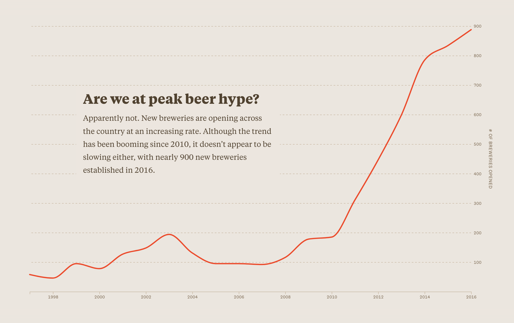

Project Research
Annotated Sources
1. California Sustainable Winegrowing Alliance. Certified California Sustainable Winegrowing Annual Report: 2023. 2023, California Sustainable Winegrowing Alliance, https://sustainablewinegrowing.org/.
The 2023 CSWA Annual Certification Report provides an overview of the sustainable practices adopted by certified wineries and vineyards across California. It highlights key areas like water conservation, pest management, renewable energy, and soil health. This report supports my project by offering valuable data on how sustainability is integrated into the wine industry, showing both environmental and economic benefits that help wineries remain successful. I find it especially valuable to explain the importance of Matchbook Winery’s sustainable certification and how their practices can inspire other wineries to thrive by adopting eco-friendly strategies in a changing climate.
2. McIntyre, Dave. "New Label Aims to Help Drinkers Find Eco-Friendly Wines." The Washington Post, 6 Apr. 2018, www.washingtonpost.com/food/2018/04/06/new-label-aims-help-drinkers-find-eco-friendly-wines/.
This article explains the introduction of the “California Certified Sustainable” logo and how wineries use certifications to show environmental responsibility and attract customers. McIntyre highlights examples like Jackson Family Wines, which use renewable energy and water-saving methods to appeal to younger consumers. This article fits well with my project because it shows how sustainable practices can help wineries succeed both environmentally and economically. It helps explain how Matchbook Winery’s certification plays a role in environmental stewardship, building consumer trust, and staying competitive.
3. Szolnoki, Gergely. "A Cross-National Comparison of Sustainability in the Wine Industry." Journal of Cleaner Production, vol. 53, 2013, pp. 243-251. ScienceDirect, https://doi.org/10.1016/j.jclepro.2013.03.045.
This article examines how wine producers from different countries define and practice sustainability. Some focus only on the environment, while others include social and economic aspects. Szolnoki also points out the confusion between terms like organic and sustainable and the need for better communication between producers and consumers. This article fits well with my project because it helps explain the importance of clear sustainability goals and how wineries like Matchbook can succeed by balancing environmental practices with business needs.
4. Flint, Daniel J., and Susan L. Golicic. "Searching for Competitive Advantage through Sustainability: A Qualitative Study in the New Zealand Wine Industry." International Journal of Physical Distribution & Logistics Management, vol. 39, no. 10, 2009, pp. 841-860. Emerald Insight, https://doi.org/10.1108/09600030911011441.
This article explores how New Zealand wineries and supply chain managers use sustainability to gain a competitive edge in a highly competitive industry. Flint and Golicic use interviews, observations, and field documents to study how managers implement sustainability and develop relationships around these practices. A crucial part of their findings is that sustainability benefits the environment and acts as a business strategy that improves brand reputation and relationships. This fits well with my project because it shows how small wineries like Matchbook can use sustainable practices to adapt to climate change and build competitive advantages and stronger connections with consumers and partners.
5. Samora, Russell "What city is the microbrew capital of the US?" The Pudding, 4 Apr. 2017, https://pudding.cool/2017/04/beer/.
This interactive article uses data storytelling to explore beer trends through visualizations that blend art and information. Samora creatively transforms complex data into engaging, easy-to-navigate charts and infographics, offering a unique way to convey insights through interactive media. This piece serves as artistic inspiration for my project by showing how data and storytelling can combine to create an immersive experience. It helps me think about using interactive elements to make sustainability practices at Matchbook Winery more engaging and accessible for my audience.